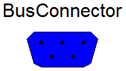
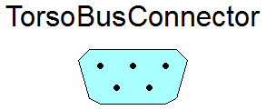

Empty control bus that is adapted to the signals connected to it

This connector defines the "expandable connector" ControlBus that is used as bus in the HuMod model. Note, this connector is "empty". When using it, the actual content is constructed by the signals connected to this bus.
Physiological units with nominals
The main problem of medical research, articles, and experiments is using obscure units from medicine, pharmacology, biology and non-physics disciplines. The Physiolibrary fulfills the Modelica ideal of using SI units as the main unit for each variable, and the previously described physiological units are also implemented as the displayUnits for each variable. Using these displayUnits the user sets and sees the "physiological" values. The implementation can also be joined to any unit-correct Modelica models and physical equations without crashing due to unit incompatibilities. The unit support of Physiolibrary is so strong that you even can chose the right unit-typed “input real”/”output real” from the library package Types.RealIO. As can be expected, only the non-specific packages States and Blocks in the Physiolibrary have variables without units.
Extends from Modelica.Icons.Package (Icon for standard packages).
| Name | Description |
|---|---|
| User's Guide | |
| Examples that demonstrate usage of the Pressure flow components | |
| Constants | |
| ScaleConstants | |
| RealIO | |
| BusConnector | Empty control bus that is adapted to the signals connected to it |
| IO_Bus | Subsystem outputs manipulation |
| TorsoBusConnector | Upper, Middle or Lower Torso properties |
| TissueBusConnector | Tissue properties |
| Energy | |
| Time | |
| Frequency | |
| Mass | |
| MassFlowRate | |
| Density | |
| MolarMass | |
| Height | |
| Position | |
| Velocity | |
| Acceleration | |
| Pressure | |
| Volume | |
| VolumeFlowRate | |
| Concentration | |
| AmountOfSubstance | |
| MolarFlowRate | |
| MolarEnergy | chemical internal energy, chemical enthalpy, Gibb's energy .. |
| MassConcentration | |
| Osmolarity | |
| Heat | |
| Temperature | |
| HeatFlowRate | |
| Power | |
| PowerPerMass | |
| ThermalConductance | |
| SpecificHeatCapacity | |
| SpecificEnergy | vaporization, .. |
| ElectricPotential | |
| ElectricCharge | |
| VolumeDensityOfCharge | |
| ElectricCurrent | |
| Fraction | |
| pH | |
| OsmoticPermeability | |
| DiffusionPermeability | |
| HydraulicConductance | |
| HydraulicResistance | |
| HydraulicCompliance | |
| HydraulicElastance | |
| HydraulicInertance | |
| GasSolubility | Gas solubility in liquid |
| StoichiometricNumber | |
| Population | Average number of population individuals |
| PopulationChange | Average change of population individuals |
| PopulationChangePerMember | Average change per population individual |
| AbstractReal | Abstract parameter or the value at defined time (final) of the model - can be input or output parameter |
| RealTypeInputParameters | |
| RealTypes | |
| AbstractBoolean | Abstract parameter or the value at defined time of the model - can be input or output parameter |
| File input/output/test | |
| Value input/output/test support | |
| No input/output/test | |
| SimulationType | Initialization or Steady state options (to determine model type before simulating) |
Licensed by Marek Matejak under the Modelica License 2
Copyright © 2008-2014, Marek Matejak, Charles University in Prague.
This Modelica package is free software and the use is completely at your own risk; it can be redistributed and/or modified under the terms of the Modelica License 2. For license conditions (including the disclaimer of warranty) see UsersGuide.ModelicaLicense2 or visit http://www.modelica.org/licenses/ModelicaLicense2.
type Energy = Modelica.SIunits.Energy(displayUnit="kcal", nominal=4186.8);
type Time = Modelica.SIunits.Time(displayUnit="min", nominal=60);
type Frequency = Modelica.SIunits.Frequency(displayUnit="1/min");
type Mass = Modelica.SIunits.Mass(displayUnit="g", nominal=1e-3, min=0);
type MassFlowRate = Modelica.SIunits.MassFlowRate(displayUnit="mg/min", nominal=(1e-6)/60);
type Density = Modelica.SIunits.Density(displayUnit="kg/l", nominal=1e3);
type MolarMass = Modelica.SIunits.MolarMass(displayUnit="kDa", nominal=1);
type Height = Modelica.SIunits.Height(displayUnit="cm", nominal=1e-2);
type Position = Modelica.SIunits.Position(displayUnit="cm", nominal=1e-2);
type Velocity = Modelica.SIunits.Velocity(displayUnit="km/h", nominal=1);
type Acceleration = Modelica.SIunits.Acceleration(displayUnit="m/s2", nominal=1);
type Pressure = Modelica.SIunits.Pressure(displayUnit="mmHg", nominal=133.322387415);
type Volume = Modelica.SIunits.Volume(displayUnit="ml", nominal=1e-6, min=0);
type VolumeFlowRate = Modelica.SIunits.VolumeFlowRate(displayUnit="ml/min", nominal=(1e-6)/60);
replaceable type Concentration = Modelica.SIunits.Concentration (displayUnit="mmol/l", min=0) constrainedby Real;
replaceable type AmountOfSubstance = Modelica.SIunits.AmountOfSubstance (displayUnit="mmol", min=0) constrainedby Real;
replaceable type MolarFlowRate = Modelica.SIunits.MolarFlowRate(displayUnit="mmol/min") constrainedby Real;
replaceable type MolarEnergy = Modelica.SIunits.MolarEnergy(displayUnit="kcal/mol", nominal=4186.8) constrainedby Real "chemical internal energy, chemical enthalpy, Gibb's energy ..";
type MassConcentration =
Modelica.SIunits.MassConcentration(displayUnit="mg/l", nominal=1e-3, min=0);
type Osmolarity = Modelica.SIunits.Concentration (displayUnit="mosm/l", nominal=1);
type Heat = Modelica.SIunits.Heat(displayUnit="kcal", nominal=4186800);
type Temperature = Modelica.SIunits.Temperature(displayUnit="degC", nominal=1, min=0);
type HeatFlowRate = Modelica.SIunits.HeatFlowRate(displayUnit="kcal/min", nominal=4186.8/60);
type Power = Modelica.SIunits.Power(displayUnit="kcal/min", nominal=4186.8/60);
type PowerPerMass = Real(final quantity="Power per Mass",final unit="W/kg",displayUnit="cal/(g.min)", nominal=4.1868/(0.001*60));
type ThermalConductance = Modelica.SIunits.ThermalConductance(displayUnit="kcal/(min.K)", nominal=4186.8/60);
type SpecificHeatCapacity = Modelica.SIunits.SpecificHeatCapacity(displayUnit="kcal/(kg.K)", nominal=4186.8);
type SpecificEnergy = Modelica.SIunits.SpecificEnergy(displayUnit="kcal/kg", nominal=4186.8) "vaporization, ..";
type ElectricPotential = Modelica.SIunits.ElectricPotential(displayUnit="mV", nominal=1e-3);
type ElectricCharge = Modelica.SIunits.ElectricCharge(displayUnit="meq", nominal=(9.64853399*10^4)/1000);
type VolumeDensityOfCharge =
Modelica.SIunits.VolumeDensityOfCharge(displayUnit="meq/l", nominal=(9.64853399*10^4));
type ElectricCurrent = Modelica.SIunits.ElectricCurrent(displayUnit="meq/min", nominal=(9.64853399*10^4/1000)/60);
type Fraction = Real(final quantity="Fraction",final unit="1", displayUnit="%", nominal=1e-2);
type pH = Real(final quantity="pH",final unit="1",final displayUnit="1", nominal=7, min=0, max=14);
type OsmoticPermeability = Real(final quantity="OsmoticPermeability",final unit="m3/(Pa.s)", displayUnit="ml/(mmHg.min)", nominal=(1e-6)/((133.322387415)*60), min=0);
type DiffusionPermeability = Real(final quantity="DiffusionPermeability", final unit="m3/s", displayUnit="ml/min", nominal=(1e-6)/60, min=0);
type HydraulicConductance = Real(final quantity="HydraulicConductance",final unit="m3/(Pa.s)", displayUnit="ml/(mmHg.min)", nominal=(1e-6)/((133.322387415)*60), min=0);
type HydraulicResistance = Real(final quantity="HydraulicConductance",final unit="(Pa.s)/m3", displayUnit="(mmHg.min)/ml", nominal=(1e+6)*(133.322387415)*60, min=0);
type HydraulicCompliance = Real(final quantity="HydraulicCompliance",final unit="m3/Pa", displayUnit="ml/mmHg", nominal=(1e-6)/(133.322387415));
type HydraulicElastance = Real(final quantity="HydraulicElastance",final unit="Pa/m3", displayUnit="mmHg/ml", nominal=(133.322387415)/(1e-6));
type HydraulicInertance = Real(final quantity="HydraulicInertance",final unit="Pa.s2/m3", displayUnit="mmHg.min2/ml", nominal=((133.322387415)*(60^2)/(1e-6)));
type GasSolubility = Real(final quantity="GasSolubility", final unit="(mol/m3)/(mol/m3)", displayUnit="(mmol/l)/kPa at 25degC", nominal=1e-2, min=0) "Gas solubility in liquid";
type StoichiometricNumber = Modelica.SIunits.StoichiometricNumber;
type Population = Real (final quantity="Population", final unit="1", displayUnit="1", min=0) "Average number of population individuals";
type PopulationChange = Real (final quantity="PopulationChange", final unit="1/s", displayUnit="1/d") "Average change of population individuals";
type PopulationChangePerMember = Real (final quantity="PopulationChangePerMember", final unit="1/s", displayUnit="1/d") "Average change per population individual";
type SimulationType = enumeration( NoInit "Use start values only as a guess of state values", NormalInit "Initialization by start values", ReadInit "Initialization by function Utilities.readReal('state name')", InitSteadyState "Initialization in Steady State (initial derivations are zeros)", SteadyState "Steady State = Derivations are zeros during simulation") "Initialization or Steady state options (to determine model type before simulating)";
Upper, Middle or Lower Torso properties

This icon is designed for a signal bus connector.
Tissue properties

This icon is designed for a signal bus connector.
Abstract parameter or the value at defined time (final) of the model - can be input or output parameter
| Type | Name | Default | Description |
|---|---|---|---|
| Real | k | 0 | Value |
| RealTypeRecord | unitConversions[:] | Utilities.UnitConversions.Re... | Unit conversions |
| Types | |||
| Simple type | |||
| replaceable type T | Real | Real type with units | |
| IO | |||
| Value I/O | |||
| String | varName | "Stored name" | |
| String | storeUnit | "" | Stored units |
| Type | Name | Description |
|---|---|---|
| Types | ||
| Simple type | ||
| replaceable type T | Real type with units | |
Abstract parameter or the value at defined time of the model - can be input or output parameter
| Type | Name | Default | Description |
|---|---|---|---|
| Boolean | k | false | Value |
| IO | |||
| Value I/O | |||
| String | varName | "" | Name of stored variable |